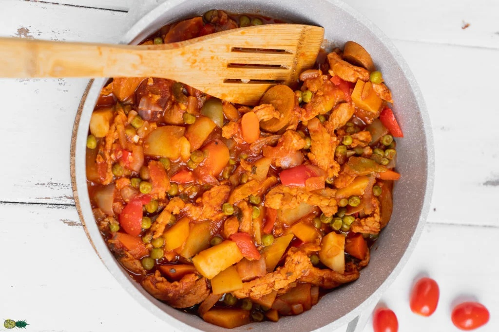

A veganized version of a popular Filipino dish made from vegan chicken
stewed with tomato sauce and vegetables.
It is packed with flavor, SO easy to make, and naturally gluten-free! Plus
it tastes just like the classic dish, only vegan.
It is perfect for meal prep or for serving a large crowd and is best
served alongside rice.

Ingredients
½ bag (4 oz.) soy curls
1 tablespoon better than bouillon vegan chicken broth paste
2 ⅓ cups water
½ tablespoon avocado oil (or cooking oil of choice)
3 dried bay leaves
½ large onion, finely diced
5 cloves garlic, minced
1 medium bell peppers, diced
2 vegan hot dogs
3 small red potatoes, medium diced
2 small carrots, medium diced
1 (15 oz.) cans tomato sauce
8 oz. frozen peas
2 tablespoons finely chopped cilantro
Salt and black pepper, to taste
1 tablespoon tomato paste (optional)
½ teaspoon poultry seasoning (optional)
Steps
Prepare the soy curls. Mix the vegan chicken broth paste into a small
pot with 2 cups of water. Bring to a boil and remove from heat. Add the
soy curls into the pot and use a spoon to mix and make sure that every
piece is covered with water. Set aside and allow the soy curls to
rehydrate for 10 minutes.
In the meantime, set a large pot over medium heat and add in the oil.
Once heated, add in the bay leaves and cook for 1 minute.
Add in the onions and garlic, and continue cooking until the garlic is
fragrant the onions are translucent, about 3 minutes. Add in the bell
peppers and vegan hot dogs, and cook for 3 minutes more.
Next, add in the carrots and potatoes. Mix until well combined an allow
this to cook for 4 minutes, mixing often. The carrots and potatoes
should be slightly softened but not cooked through.
Add the tomato sauce, peas, and the soy curls with the broth. Mix until
everything is combined.
Add the remaining ⅓ cup of water into the tomato sauce can, swirl it
around to get any remaining sauce and pour that all into the pot.
Cover, and simmer on medium low until the carrots and tomatoes are
cooked through, about 10-15 minutes.
Add in the cilantro and season with salt and pepper to taste. We added a
lot of black pepper as it is one of our favorite spices!
Remove from heat and cool before serving. You can remove the bay leaves
or just eat around them. Serve with rice and enjoy!